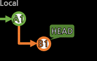

[checkout]

작업하기 위해 Branch나 특정 커밋으로 이동한다.
> git checkout 로컬브랜치명
> git checkout a01
Switched to branch 'a01'<---- 선택한 로컬브랜치로 전환이 되었다는 뜻
Your branch is up to date with 'origin/a01'.<---- 만약 리모트브랜치와 연동되어 있다면, 리모트브랜치와의 차이를 알려준다.
만약 새로운 로컬 브랜치를 만들고 한번도 push하지 않았다면,
리모트브랜치 관련문은 뜨지 않는데,
상관없이 commit을 만들다가
push를 할 때 리모트브랜치를 만들거나 선택해서 진행하면 된다.
브랜치가 아니라, 특정 커밋으로 이동할 수도 있다.
> git checkout 커밋ID
> git checkout ae2bd39
...
You are in 'detached HEAD' state. ...
...
HEAD is now at ae2bd39 커밋_당시_코멘트
detached HEAD 상태인 것에 주목한다.
어느 브랜치에서 진행하는 것이 아니라서 commit을 할 순 없다.
그저 이 커밋 당시로 파일들의 상태를 복원해보는 용도로 쓰거나,
여기에서 branch명령어로 새로운 브랜치를 파생시키면 commit할 수 있다.
(git checkout -b 새_로컬브랜치명으로 생성과 전환을 동시에 할 수 있다.)
커밋ID 외에도 브랜치 이름 뒤에 ^를 붙이면(a01^^^),
^ 수만큼 브랜치의 최신지점에서 한 칸씩 이전으로 진행한 곳을 의미하고,
브랜치명~n은 브랜치에서 n칸 앞을 의미한다.
또는 리모트브랜치(예:origin/a01)로 입력하면,
해당 리모트브랜치가 가리키는 커밋으로 detached HEAD 상태로 전환된다.
이제 전환된 브랜치에서 작업을 시작하려면
커밋의 실질적인 작성 부분인 add로 작업을 반영시킨다.

checkout으로 브랜치를 전환하려는데(전환하면 작업내용은 유실)
이미 작업 중인 상황이라, 이 작업을 보존하고 싶다면